Realizado por el I.S.C FRANCISCO JAVIER JIMENEZ WITRAGO Versión 1.0 del sistema completo: punto de venta, operación diaria, trabajo sin señal, cámara y etiquetas, y tienda en línea · Noviembre de 2026 Pendiente solo comprar el dominio fijo (capítulo final).
1. Qué es y cómo funciona
Modas Andrea es el sistema de ventas de la tienda: punto de venta, inventario con fotos, clientes, apartados, caja, gastos y reportes, lector de códigos y reconocimiento con la cámara, etiquetas y tickets, y una tienda en línea que se arma sola con el inventario para compartir en WhatsApp, Facebook y Marketplace. Sirve para mochilas, útiles, termos, cobijas, relojes y cualquier artículo que se agregue.
Funciona como AcuaGest: una computadora del negocio es el servidor. En ella se guardan la base de datos, las fotos y los respaldos. Las demás computadoras, tablets y celulares abren el sistema en el navegador (Chrome o Edge), conectados a esa computadora.
Importante: mientras la ventana negra de aplicacion.bat esté abierta en la computadora del negocio, el sistema funciona para todos. Si se cierra, los demás dispositivos dejan de conectarse.
Lo que necesitas
Una computadora con Windows 10 u 11 (será el servidor).
Internet solo durante la instalación (para descargar Python y sus librerías).
Para conectar otros dispositivos: la misma red WiFi que la computadora del negocio, o internet usando acceso_remoto.bat (capítulo 5).
Opcional: un lector de códigos de barras USB y una impresora de tickets.
2. Instalación en Windows
Descomprime el archivo ZIP en una carpeta fija, por ejemplo C:\ModasAndrea. Clic derecho sobre el ZIP → Extraer todo… No lo abras desde el ZIP sin extraer.
Entra a la carpeta y haz doble clic en instalar.bat. Si Windows muestra "Windows protegió su PC", elige Más información → Ejecutar de todas formas.
El instalador busca Python 3.12 y, si no está, lo instala solo (con winget). Si la ventana dice que no encontró winget, se abrirá la página de Python: instálalo marcando Add python.exe to PATH y vuelve a ejecutar instalar.bat.
Crea un entorno aislado (.venv), instala las librerías y genera el archivo .env con una clave secreta.
Prepara la base de datos en data\modas-andrea.db.
Pregunta si quieres cargar el catálogo de prueba (58 productos con foto). Para probar, responde S; para usarlo ya con tus productos reales, responde N.
Crea dos accesos directos en el escritorio: Modas Andrea (solo en la red del negocio) y Modas Andrea (internet) (también para celulares fuera del local y la tienda en línea), y te ofrece abrirlo.
Puedes volver a ejecutar instalar.bat cuando quieras (por ejemplo, al recibir una versión nueva): no borra tus datos.
Actualizar a una versión nueva
Cierra la ventana de aplicacion.bat.
Copia tu carpeta data y tu archivo .env a un lugar seguro (o simplemente conserva tu carpeta).
Extrae la versión nueva en otra carpeta, copia ahí tu data y tu .env, y ejecuta instalar.bat.
Al abrir, el sistema actualiza la base de datos solo, sin perder información.
3. Abrir el sistema y entrar
Haz doble clic en el acceso directo Modas Andrea (o en aplicacion.bat). Si vas a usar celulares fuera del local o compartir la tienda en línea, usa mejor Modas Andrea (internet), que abre acceso_remoto.bat (capítulo 5). Se abre una ventana negra con dos direcciones y, en unos segundos, el navegador con la pantalla de entrada.
En esta computadora:http://127.0.0.1:5000
En la red local: por ejemplo http://192.168.1.20:5000 (la usan los demás dispositivos).
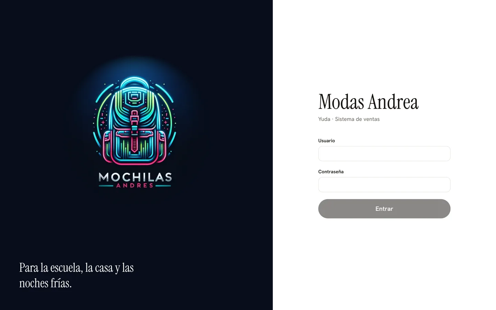
Pantalla de entrada.
Usuarios iniciales
Usuario
Contraseña
Rol
admin
admin123
Administrador
vendedor
12345
Vendedor
Cambia estas contraseñas antes de usar el sistema en la tienda: cada usuario en Mi cuenta (toca tu nombre abajo en el menú) o el administrador con restablecer_contrasena.bat. Por internet no se puede entrar con las contraseñas iniciales. Después de 5 intentos equivocados, el usuario se bloquea 5 minutos.
4. Conectar otros dispositivos
El administrador abre Conectar dispositivo en el menú. Ahí aparece un código QR con el enlace del sistema y los botones Copiar y Enviar por WhatsApp.
En el celular o tablet, abre la cámara y apunta al código QR (o abre el enlace que te enviaron por WhatsApp).
Entra con tu usuario y contraseña.
Instala la app: en Android (Chrome) menú ⋮ → Instalar app; en iPhone (Safari) Compartir → Agregar a inicio. Desde ese momento abres Modas Andrea desde su ícono.
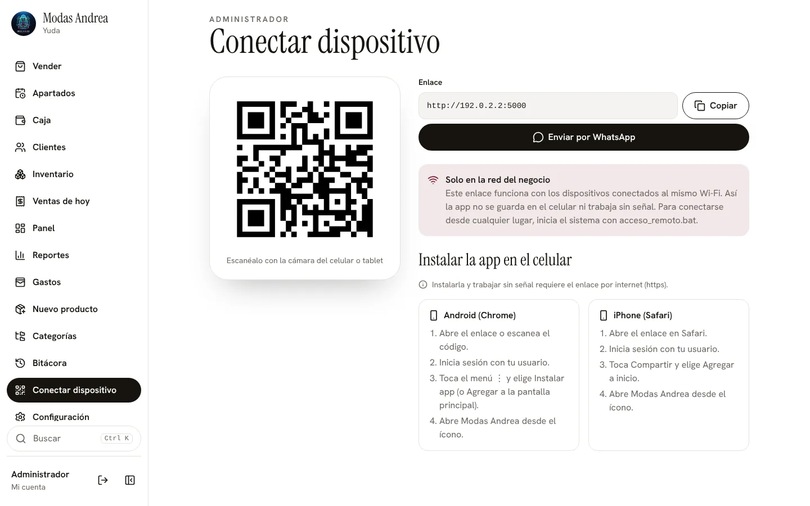
Conectar dispositivo: código QR, enlace, WhatsApp y pasos para instalar la app.
Tipo de enlace
Cómo se obtiene
Qué permite
Red localhttp://192.168…:5000
Con aplicacion.bat
Solo dispositivos en el mismo WiFi del negocio. La app no se guarda en el celular ni trabaja sin señal.
Por internethttps://….trycloudflare.com
Con acceso_remoto.bat (capítulo 5)
Desde cualquier lugar con datos o WiFi. La app se instala y sigue vendiendo aunque se vaya la señal. Cambia en cada inicio.
Fijo (tu dominio)
PUBLIC_URL y CLOUDFLARE_TUNNEL_TOKEN en .env
Lo mismo que el anterior, pero la dirección nunca cambia.
La primera vez, Windows puede preguntar si permite que Python use la red: elige Permitir (redes privadas).
En el celular el menú queda abajo y el carrito se abre con "Ver carrito".
5. Acceso desde internet
Desde la computadora del negocio, entra con cada usuario y cambia su contraseña en Mi cuenta (toca tu nombre abajo en el menú; en el celular, Más → Mi cuenta). Por internet se rechazan admin123 y 12345.
Abre el sistema con acceso_remoto.bat en lugar de aplicacion.bat. La primera vez descarga la herramienta de Cloudflare (unos 50 MB).
La ventana negra muestra DESDE INTERNET con una dirección https://. En Conectar dispositivo aparece ya con su código QR.
No hace falta abrir puertos del módem: Cloudflare solo reenvía las visitas cifradas hasta la computadora del negocio. La dirección de prueba cambia cada vez que se inicia acceso_remoto.bat: después de reiniciar, comparte el QR nuevo. Para una dirección fija, crea un túnel en tu cuenta de Cloudflare y escribe en .env su CLOUDFLARE_TUNNEL_TOKEN y tu dominio en PUBLIC_URL.
6. Publicar la tienda en Cloudflare (opcional)
Así la tienda funciona aunque la computadora del negocio esté apagada y su dirección no cambia (https://modas-andrea-tienda.pages.dev). Es gratis; necesitas una cuenta de Cloudflare (la misma servirá después para el dominio).
Crea tu cuenta en dash.cloudflare.com. Copia el ID de la cuenta (aparece a la derecha en la página de inicio de la cuenta).
En Mi perfil › Tokens de API › Crear token › Token personalizado, dale los permisos Cloudflare Pages: Editar y Workers KV Storage: Editar de tu cuenta. Copia el token.
Abre el archivo .env de la carpeta del sistema con el Bloc de notas y pega: CLOUDFLARE_ACCOUNT_ID=… y CLOUDFLARE_API_TOKEN=…. Si quieres otro nombre para la dirección, cambia CLOUDFLARE_PAGES_PROJECT.
Cierra y vuelve a abrir el sistema. La ventana negra muestra Tienda publicada en. La primera publicación tarda unos minutos; en Configuración › Tienda en línea ves la hora de la última publicación y el botón Publicar ahora.
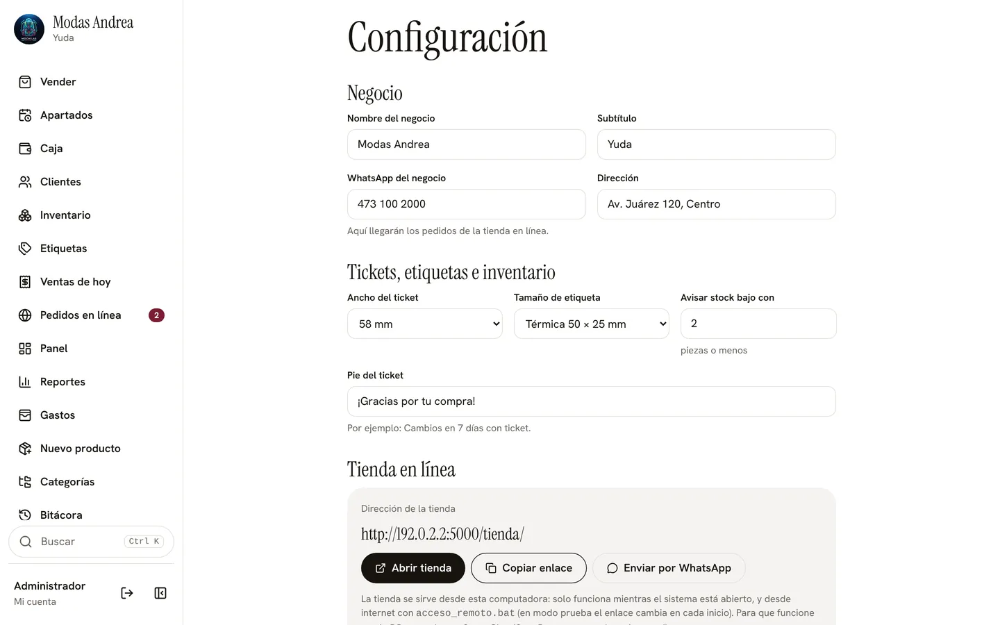
Configuración de la tienda en línea.
La computadora vuelve a publicar sola cuando cambian productos, precios, fotos o existencias (como máximo cada 3 minutos).
Los pedidos hechos mientras la PC está apagada se guardan en Cloudflare. Cada minuto, con la PC prendida y con internet, el sistema los recoge y aparecen en Pedidos en línea. El cliente igual te escribe por WhatsApp.
Las existencias de la tienda publicada son las de la última publicación: con la PC apagada no se actualizan, por eso todo pedido se confirma antes de entregarlo.
Esta parte se probó con un Cloudflare simulado, siguiendo el mismo procedimiento que la herramienta oficial de Cloudflare. La primera vez que la actives, revisa en Configuración que diga la hora de publicación y abre la dirección para confirmarlo. Si aparece un error, la tienda sigue funcionando desde la computadora del negocio.
7. Stock en vivo y ventas sin señal
Cada 3 segundos la app revisa si otro dispositivo vendió o apartó algo y actualiza las existencias en pantalla y en el carrito. Así dos vendedores no venden la misma última pieza.
Si se va el internet
Arriba aparece Sin señal en color vino, y Vender avisa con qué antigüedad se vieron las existencias.
Las ventas, apartados, abonos y clientes nuevos se guardan en el dispositivo con un folio provisional (P-1234). La nube muestra cuántos hay pendientes.
Si quedan 2 piezas o menos, la app pide confirmar, porque no puede revisar si otro dispositivo ya las vendió.
Al volver la señal todo se envía solo y en orden, con la hora real en que se hizo. Aparece Todo enviado. Nada se registra dos veces aunque la señal se corte a la mitad.
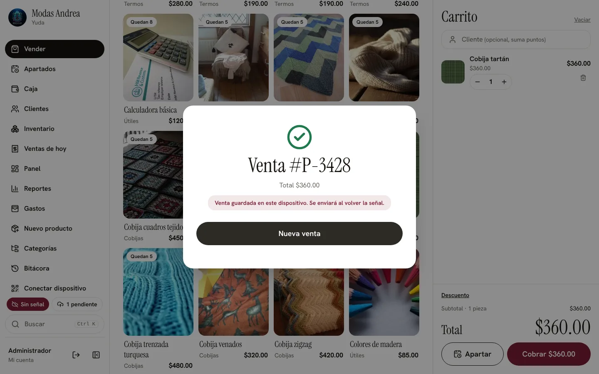
Venta guardada en el dispositivo sin señal.
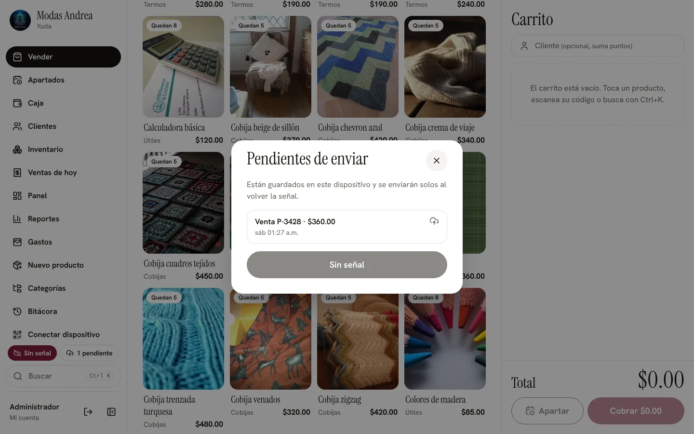
Pendientes de enviar.
También funciona si la computadora del negocio se apaga o se queda sin internet mientras los celulares usan el enlace por internet. Sin señal no se pueden hacer gastos, cortes, devoluciones ni usar saldo a favor: la app dice Necesitas conexión para hacer esto.
Si algo no se puede registrar (por ejemplo, un abono a un apartado que otra persona ya liquidó), queda marcado en Pendientes con el motivo, para Reintentar o Descartar. Lo descartado queda en la Bitácora con su motivo. Guardar respaldo de pendientes descarga un archivo con todo lo que falta por enviar. Un cliente registrado sin señal con un teléfono que ya existe se guarda sin teléfono y con una nota para revisarlo.
Al Salir con pendientes, la app avisa: se quedan en el dispositivo y se envían cuando ese mismo usuario vuelve a entrar. Al salir se borran del dispositivo los clientes y el catálogo guardados.
8. Alertas de stock y bitácora
Si una venta hecha sin señal deja el stock en negativo (porque otro dispositivo vendió la misma pieza), el Panel lo muestra en Stock negativo por ventas sin señal. Cuenta las piezas, corrige con Ajustar existencias y toca Marcar como revisada.
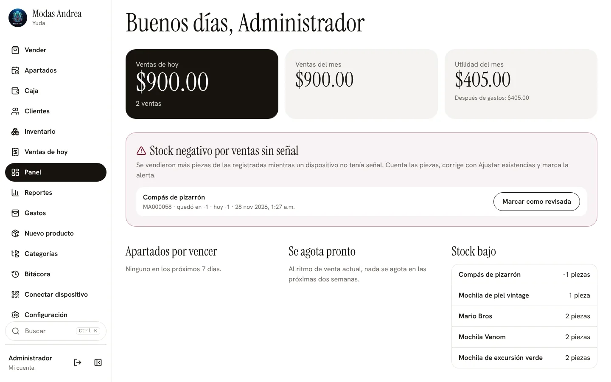
Alerta de stock negativo en el Panel.
La Bitácora (administrador) muestra quién hizo cada venta, apartado, abono, gasto, ajuste o cambio, y cuándo. Lo hecho sin señal lleva la etiqueta Sin señal y la hora real en que ocurrió.
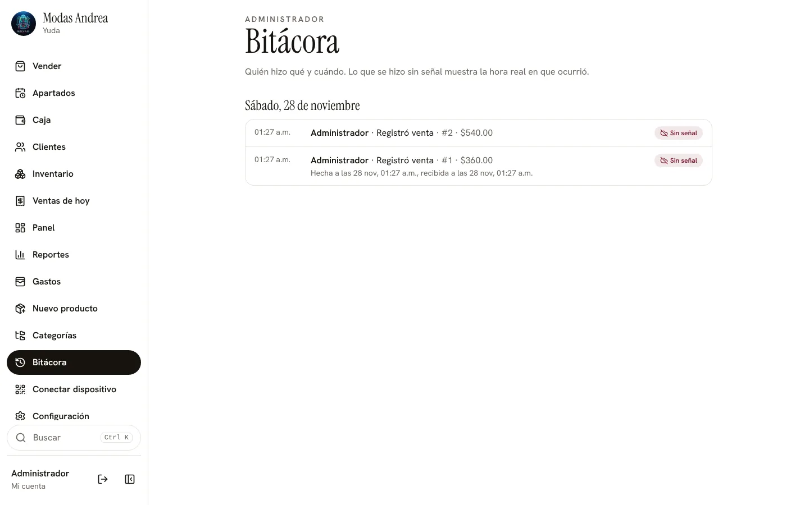
Bitácora.
9. Usuarios y permisos
Puede…
Vendedor
Administrador
Vender, cobrar, buscar con Ctrl+K y escanear
Sí
Sí
Descuentos
Hasta 10 % de la venta
Sin límite
Clientes: registrar, editar y ver
Sí
Sí
Apartados: crear, abonar y liquidar
Sí
Sí
Cancelar apartados
No
Sí
Abrir caja y hacer corte
Sí
Sí, y ve el historial de cortes
Ver inventario y ventas del día
Sí (sin costos)
Sí (con costos)
Cancelar ventas y registrar devoluciones
No
Sí
Productos, precios, entradas y ajustes de inventario
No
Sí
Gastos, reportes, panel, categorías y configuración
No
Sí
Bitácora, alertas de stock y Conectar dispositivo
No
Sí
Cambiar su propia contraseña (Mi cuenta)
Sí
Sí
10. Vender
Vender: productos a la izquierda, carrito a la derecha.
Hay tres formas de agregar un producto al carrito:
Tocarlo en la cuadrícula. Cada tarjeta muestra la foto, el precio y cuántas piezas quedan. Los chips de arriba filtran por categoría.
Escanearlo con el lector USB, en cualquier momento de la pantalla Vender. Lee el código MA###### del sistema o el código de fábrica.
Buscarlo con Ctrl + K o con el buscador: por nombre o código.
En el carrito ajustas piezas con − y +, quitas renglones y aplicas un Descuento. El sistema no deja pasar de las piezas que hay. Si te mueves a otra pantalla, el carrito se conserva.
El vendedor puede descontar hasta el 10 % de la venta. Si escribe más, aparece "Ese descuento necesita autorización del administrador." y no deja cobrar.
11. Cobrar
Toca Cobrar. Elige la forma de pago:
Efectivo: escribe lo recibido (o toca Exacto, $500 o $1,000) y el sistema muestra el cambio.
Tarjeta: cobra con tu terminal y confirma cuando salga aprobado.
Transferencia: confirma cuando veas el depósito.
Saldo: aparece si el cliente tiene saldo a favor suficiente.
Mixto: combina formas, por ejemplo parte en tarjeta y parte en efectivo. Los montos deben sumar el total.
Cobro en efectivo con cambio.
Al confirmar aparece Venta #folio con el cambio en grande. Desde ahí puedes imprimir el ticket o enviarlo por WhatsApp (capítulo Tickets). Toca Nueva venta para empezar otra. Tocar dos veces "Confirmar cobro" no crea dos ventas.
12. Clientes, puntos y saldo a favor
En el carrito toca Cliente para buscarlo por nombre o teléfono, o Registrar cliente nuevo (nombre y teléfono de 10 dígitos, opcional). No se permiten dos clientes con el mismo teléfono.
Puntos: cada compra suma 1 punto por cada $10 pagados. Si devuelve piezas, se restan.
Saldo a favor: se genera al cancelar un apartado con "Dejar como saldo a favor" o con una devolución "a saldo". Se usa al cobrar con la pestaña Saldo o dentro de un pago mixto.
En el menú Clientes ves la lista; en la ficha de cada cliente, sus puntos, su saldo, lo que ha comprado, sus apartados y sus notas.
13. Apartados
En Vender, agrega los productos al carrito.
Elige al cliente (el apartado siempre lleva cliente).
Toca Apartar: escribe el anticipo, la forma de pago y la fecha límite (30 días por defecto).
Las piezas salen del inventario para que nadie más las venda. Aparece Apartado #folio · Saldo $….
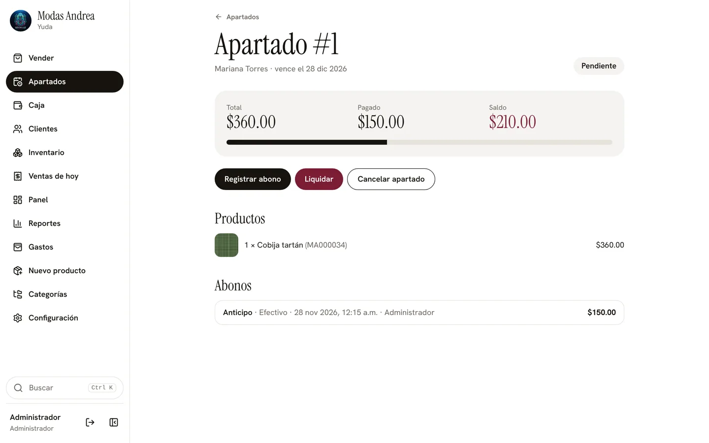
Ficha de un apartado con su avance de pago.
En el menú Apartados tienes las pestañas Pendientes, Vencidos, Liquidados y Cancelados. En la ficha:
Registrar abono: no permite abonar más que el saldo.
Liquidar: con el pago final (o si ya está pagado). Se registra como venta y se entregan los productos.
Cancelar apartado (administrador): escribe el motivo y elige si el dinero se devuelve (en efectivo sale de la caja) o queda como saldo a favor. Las piezas regresan al inventario y los abonos quedan registrados.
14. Ventas de hoy, cancelaciones y devoluciones
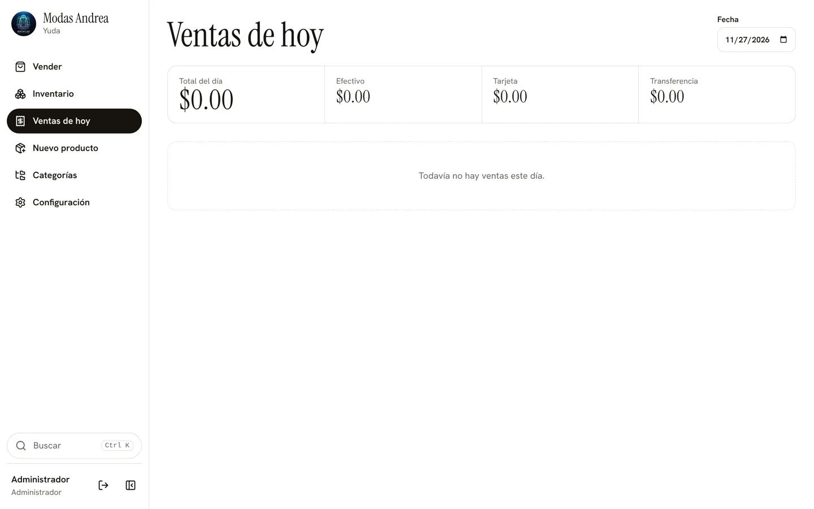
Ventas del día con totales por forma de pago.
Arriba ves el total del día y cuánto entró en efectivo, tarjeta y transferencia. Con el selector de fecha consultas otros días. Toca una venta para ver su detalle.
Cancelar una venta (administrador)
Para errores de captura: escribe el motivo y confirma. Todas las piezas regresan, se restan los puntos, el saldo a favor usado regresa al cliente y, si fue en efectivo, el dinero sale de la caja abierta. La venta queda registrada como cancelada.
Devolver piezas (administrador)
Cuando el cliente regresa una o varias piezas: escribe cuántas piezas de cada producto regresan, el motivo y cómo se reembolsa (efectivo, tarjeta, transferencia o saldo a favor). El sistema calcula el reembolso con lo que se pagó por esas piezas, incluyendo descuentos. Una venta que ya tiene devoluciones no se puede cancelar: se devuelven las piezas restantes.
15. Caja y corte
Caja abierta: efectivo que debe haber y movimientos.
Al empezar el turno: menú Caja → escribe el Fondo inicial → Abrir caja.
Durante el día la pantalla muestra en vivo el efectivo que debe haber: fondo + ventas en efectivo + abonos en efectivo − reembolsos en efectivo − gastos pagados de la caja − ventas canceladas en efectivo.
Al terminar: Hacer corte → escribe el efectivo contado. Verás Cuadra, Faltan $… o Sobran $… → Guardar corte.
El esperado cuenta lo cobrado, no lo recibido: si cobras $730 y te dan $1,000, suman $730. Si alguien cobra en efectivo sin abrir caja, el sistema la abre solo con fondo $0. El administrador ve el historial de cortes con sus diferencias.
16. Inventario
Ficha de producto: fotos, variantes, precios y bitácora.
El menú Inventario lista todos los productos con su foto, piezas y precio. Puedes filtrar por categoría, por Stock bajo o buscar por nombre o código. En la ficha de cada producto:
Fotos: agrega o quita fotos (siempre debe quedar al menos una).
Variantes: cada color, talla o capacidad tiene su propio código MA######, código de fábrica, precio, costo y piezas. El precio y el costo se editan en la tabla.
Mostrar en tienda en línea: interruptor para la tienda en línea (etapa 6).
Entrada: cuando llega mercancía; suma piezas y puede actualizar el costo.
Ajustar existencias: cuando el conteo físico no coincide; pide el motivo.
Bitácora: cada cambio de piezas (venta, cancelación, entrada, ajuste, apartado, devolución) con fecha y nota.
17. Nuevo producto con fotos
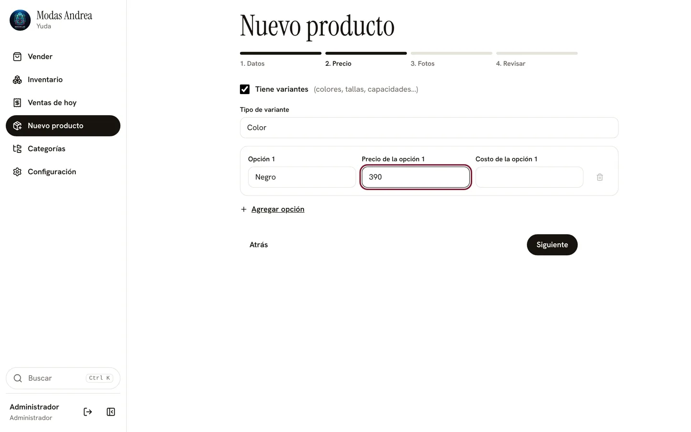
Alta de producto en 4 pasos.
Datos: nombre, categoría y descripción.
Precio: un precio y costo, o marca Tiene variantes (por ejemplo Color: Negro, Rosa…) con precio de cada opción. Si la etiqueta trae código de barras, escanéalo en Código de fábrica.
Fotos: la guía pide Frente, Lado y Detalle. Puedes Usar cámara, Tomar foto con el celular o Elegir foto de la galería. Se necesita al menos una.
Revisar y guardar: recibe su código MA###### y aparece de inmediato en Vender. Las piezas se cargan después con Entrada.
La cámara dentro del navegador funciona en la computadora del negocio. En celulares conectados por la red local, usa Tomar foto con el celular, que abre la cámara del teléfono.
18. Escanear con la cámara
En Vender, junto al buscador, toca Escanear. Se abre la cámara trasera del celular, tablet o laptop.
En Código de barras, apunta al código dentro del recuadro. Sirve con los códigos del sistema (MA000123) y con los de fábrica (EAN-13, UPC).
Al leerlo, el recuadro da un pequeño salto, el celular vibra y el producto se agrega al carrito.
Si el código no está dado de alta, la hoja lo dice y sigue escaneando.
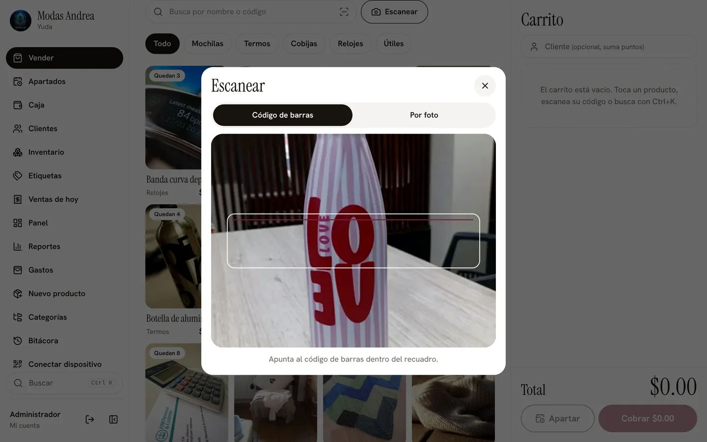
Escáner con la cámara en Vender.
Sin señal también funciona: el código se busca en la copia del catálogo guardada en el dispositivo. El lector USB de la computadora sigue funcionando igual que antes.
Asociar el código de fábrica
En Inventario, abre el producto y, en la tabla de variantes, toca el ícono de cámara junto a De fábrica. Escanea el código que trae el artículo y queda asociado: desde ese momento se puede vender escaneándolo.
La cámara solo abre por el enlace con candado (https://, el del QR) o en la misma computadora del negocio. Por la dirección http://192.168… el navegador no la permite: usa el lector USB o escribe el código.
19. Reconocer un producto sin etiqueta
Si a un artículo se le cayó la etiqueta, abre Escanear y elige Por foto. Centra el producto con buena luz y toca Identificar producto (o Elegir foto si la cámara no abre).
La app compara la foto con las fotos del catálogo en el mismo dispositivo, sin internet y sin costo.
Muestra los 3 productos más parecidos con foto, existencias y precio.
Toca el correcto para agregarlo (si tiene variantes, toca la variante). Nunca se agrega nada sin que lo toques.
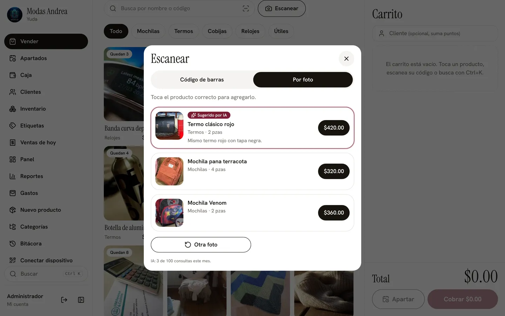
Productos parecidos y la sugerencia de la IA.
Botón “Buscar con IA”
Si ninguno de los tres es el correcto y hay internet, toca Buscar con IA. La foto y los 8 productos más parecidos se envían a la inteligencia artificial de Anthropic (Claude), que marca el que coincide como Sugerido por IA con una frase de por qué. También hay que tocarlo para agregarlo.
El botón aparece solo si el administrador puso la clave ANTHROPIC_API_KEY en el archivo .env de la computadora del negocio.
Cada consulta cuesta unos centavos de dólar (alrededor de 2 centavos con el modelo de fábrica). En Configuración › Consultas de IA al mes se pone el límite (100 de fábrica; 0 lo apaga). Al llegar al límite el botón desaparece hasta el mes siguiente.
El modelo se cambia con ANTHROPIC_MODEL en .env.
Preparar las fotos
Para reconocer un producto, sus fotos necesitan una “huella”. Las fotos nuevas se preparan solas al guardar el producto. Las que ya existían (por ejemplo, las del sistema anterior o los datos de prueba) se preparan una sola vez en Configuración › Reconocimiento con la cámara › Preparar fotos ahora, desde la computadora del administrador.
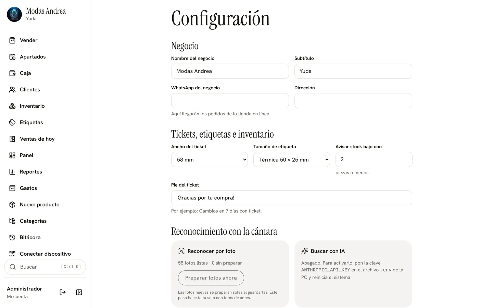
Fotos listas para reconocer y estado de la IA.
La primera vez que un dispositivo usa el reconocimiento descarga el modelo (unos 19 MB) desde la computadora del negocio. Después queda guardado y funciona sin señal.
20. Etiquetas con código de barras
Abre Etiquetas en el menú, o en la ficha de un producto toca Imprimir etiquetas.
Busca y agrega productos. Por cada variante se propone una etiqueta por pieza en existencia; cambia la cantidad con − y +.
Elige el tipo de etiqueta: térmica de 50 × 25 mm, u hoja carta de 30, 20 o 10 etiquetas adhesivas.
Revisa la vista previa y toca Imprimir.
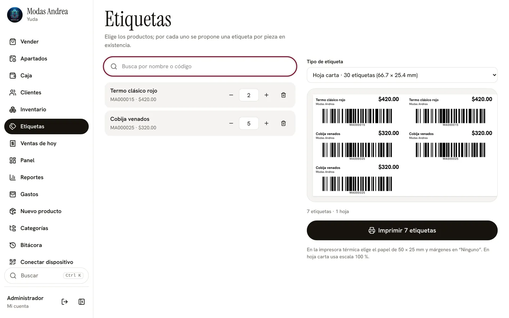
Etiquetas en hoja carta de 30.
Cada etiqueta lleva nombre, variante, precio y el código del sistema (MA######) en Code 128, que leen la cámara y el lector USB. El tipo de etiqueta de fábrica se elige en Configuración.
En la impresora térmica elige el papel de 50 × 25 mm y márgenes “Ninguno”. En hoja carta imprime en escala 100 % (sin “ajustar a la página”).
21. Tickets
Al terminar un cobro aparecen Imprimir ticket y Enviar por WhatsApp.
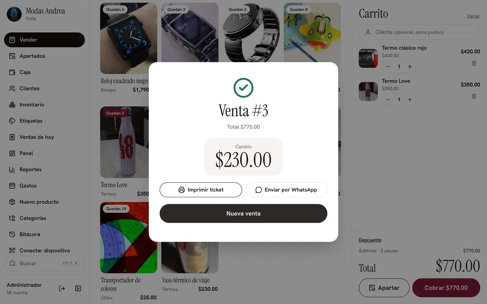
Venta registrada con sus botones de ticket.
Imprimir ticket: para impresora térmica de 58 u 80 mm (se elige en Configuración). Lleva nombre del negocio, dirección, folio, fecha, quién atendió, artículos, descuentos, total, pagos, cambio y el pie del ticket que escribas en Configuración.
Enviar por WhatsApp: abre WhatsApp con el mismo ticket en texto, dirigido al teléfono del cliente si se eligió uno.
Una venta hecha sin señal sale con su folio provisional (P-1234) y una nota.
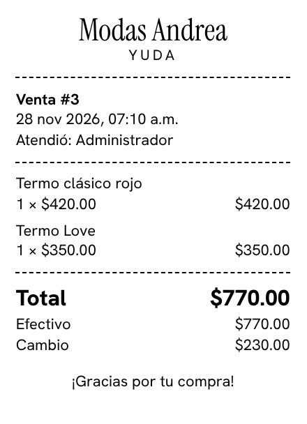
Ticket de 58 mm.
Para reimprimir, abre la venta en Ventas de hoy. En un apartado, el ticket incluye los abonos con su fecha, lo pagado, lo que resta y la fecha límite.
22. Tienda en línea
Cada producto dado de alta con foto y con Mostrar en tienda en línea encendido aparece solo en la tienda, con su foto, precio, variantes y piezas disponibles. Cuando cambias un precio, una foto o se vende la última pieza, la tienda se actualiza.
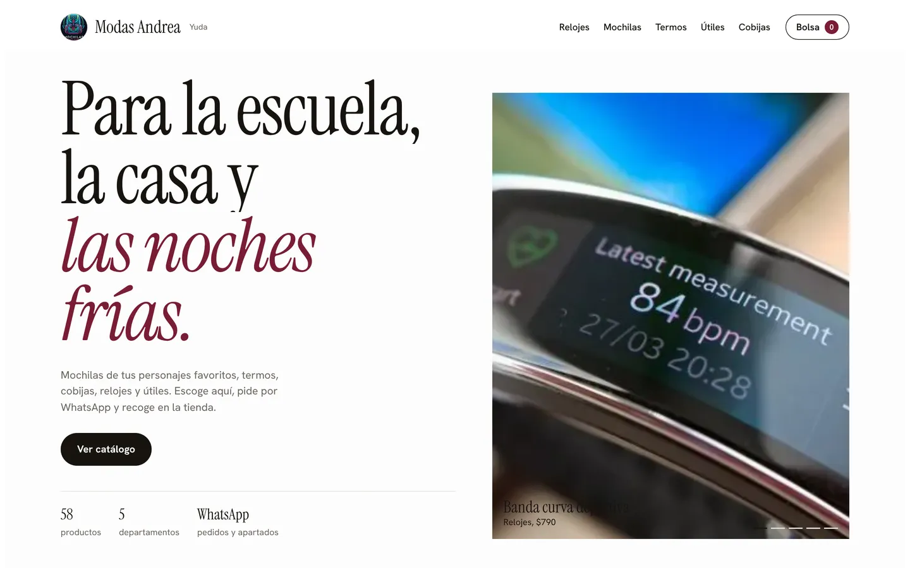
Portada de la tienda en la computadora.
Dónde está y cómo compartirla
En Configuración › Tienda en línea aparece su dirección con Abrir tienda, Copiar enlace y Enviar por WhatsApp.
En la ficha de cada producto, Compartir de la tienda abre WhatsApp con el link de ese producto. Al pegar el link en WhatsApp, Facebook o Marketplace se ve la vista previa con foto, nombre y precio.
Sin cuenta de Cloudflare, la tienda la sirve la computadora del negocio: funciona mientras el sistema está abierto, y por internet con acceso_remoto.bat. En modo prueba esa dirección cambia en cada inicio: vuelve a compartirla después de reiniciar. Para que funcione con la PC apagada y con un link que no cambie, ve el capítulo Publicar la tienda en Cloudflare.
Cómo compra el cliente
Busca o filtra por departamento y toca un producto. Elige la variante (color, talla…) y la cantidad, y toca Agregar a la bolsa. Lo agotado se ve marcado y no se puede agregar.
En la Bolsa escribe su nombre y WhatsApp, elige Recojo en tienda o Envío a domicilio (con su dirección) y toca Pedir por WhatsApp.
Se abre WhatsApp con el pedido listo para el número del negocio, con su folio (por ejemplo W-QBRZT). Al mismo tiempo el pedido entra al sistema.
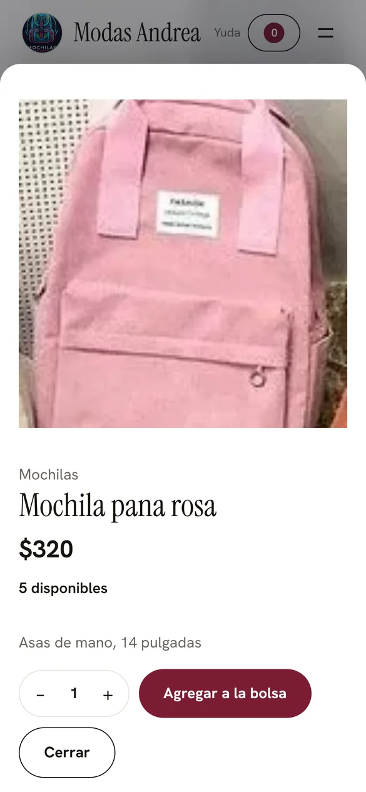
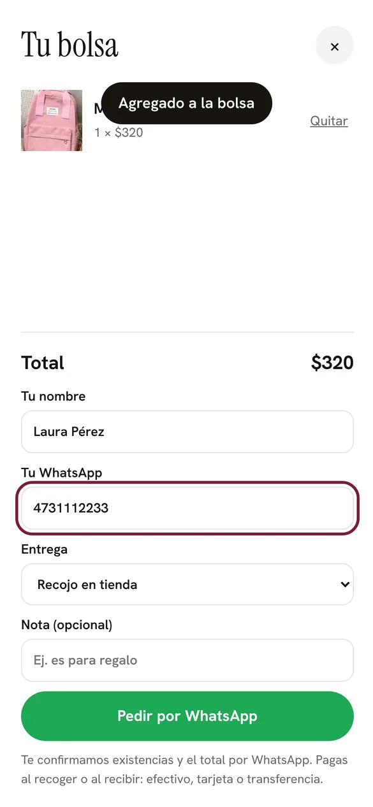
Producto y bolsa en el celular del cliente.
El cliente paga al recoger o al recibir (efectivo, tarjeta o transferencia). El pago con tarjeta dentro de la tienda quedó preparado para activarse más adelante (por ejemplo con Mercado Pago). Para que el botón abra WhatsApp, escribe el WhatsApp del negocio en Configuración.
23. Pedidos en línea
Los pedidos llegan a Pedidos en línea (administrador). El menú muestra cuántos hay pendientes.
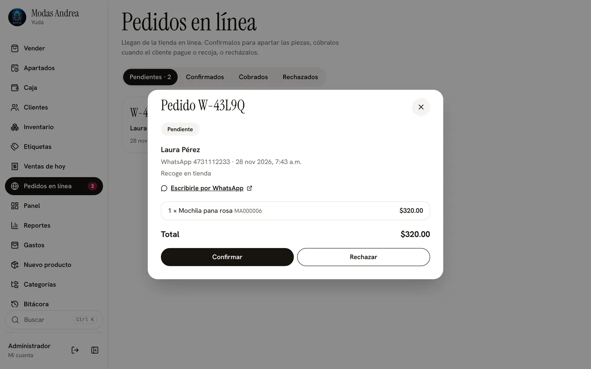
Pedido pendiente con sus artículos y el WhatsApp del cliente.
Pendiente: revisa que tengas las piezas. Escribirle por WhatsApp abre el chat con el cliente.
Confirmar: aparta las piezas del inventario (ya no se pueden vender a otra persona). Si es con envío, escribe el costo de envío. Si no alcanzan las piezas, el sistema lo dice y no aparta nada. El cliente queda registrado en Clientes (o se usa el que ya existía con ese teléfono).
Cobrar: cuando paga o recoge, registra la forma de pago. Se convierte en venta (aparece en Ventas de hoy, caja y reportes), suma puntos al cliente y ofrece Imprimir ticket o enviarlo por WhatsApp. Las piezas no se descuentan dos veces.
Rechazar: con un motivo. Si estaba confirmado, las piezas regresan al inventario.
Todo queda en la Bitácora. Un mismo pedido enviado dos veces (por mala señal del cliente) se registra una sola vez.
24. Categorías y configuración
Categorías
Crea categorías y subcategorías (por ejemplo Hogar › Termos), renómbralas o desactívalas. Aparecen como filtros en Vender e Inventario y como departamentos de la tienda en línea (las categorías principales).
Configuración
Nombre y subtítulo del negocio, WhatsApp (para los pedidos en línea), dirección, ancho del ticket (58 u 80 mm), pie del ticket, tipo de etiqueta, a partir de cuántas piezas se avisa "stock bajo", las fotos listas para reconocer con la cámara y el límite mensual de consultas de IA. En la sección Tienda en línea: la dirección de la tienda, la frase de portada, el texto de presentación, el horario y si se ocultan los agotados (capítulo Tienda en línea).
25. Gastos
Menú Gastos (administrador): escribe el concepto, la categoría (Renta, Luz e internet, Sueldos, Mercancía, Insumos, Otros) y el monto. Marca Se pagó con dinero de la caja cuando el dinero salió del cajón: así el corte lo descuenta. Un gasto de una caja ya cortada no se puede borrar ni cambiar de monto.
26. Reportes y panel
Reportes del mes.
Periodo: Hoy, Semana, Mes o un rango de fechas.
Indicadores: ventas netas (ventas − devoluciones), utilidad bruta (con el costo de cada pieza al momento de venderla), gastos y utilidad neta.
Gráficas: ventas por día (con Ver tabla), por categoría, dinero recibido por forma de pago y ventas por vendedor.
Más vendidos y Descargar Excel (CSV) con cada pieza vendida.
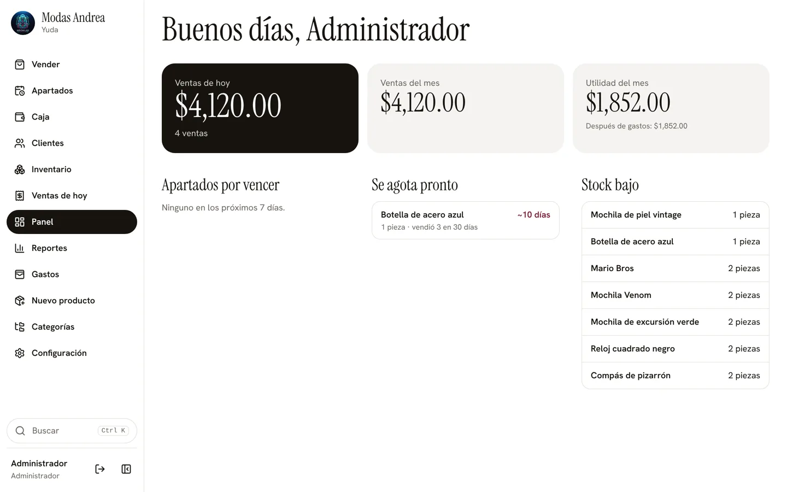
Panel del administrador.
El Panel muestra ventas de hoy y del mes, utilidad, apartados que vencen en 7 días o ya vencidos, stock bajo y Se agota pronto: productos que, al ritmo de venta de los últimos 30 días, se acaban en menos de dos semanas.
27. Respaldos y datos
Todo vive en la carpeta data: la base (modas-andrea.db), las fotos (fotos) y los respaldos (respaldos).
Cada vez que se abre el sistema se crea un respaldo del día; se conservan los 15 más recientes.
Recomendación: una vez por semana copia la carpeta data a una memoria USB o a la nube.
Para restaurar: cierra el sistema, copia el respaldo que quieras como data\modas-andrea.db y vuelve a abrir.
Configuración avanzada (archivo .env)
Variable
Para qué
PORT
Puerto del servidor (5000).
SELLER_MAX_DISCOUNT_PCT
Descuento máximo del vendedor (10).
POINTS_PER_PESOS
Un punto por cada N pesos (10).
LAYAWAY_DAYS
Plazo de un apartado en días (30).
BACKUPS_TO_KEEP
Respaldos que se conservan (15).
Ábrelo con el Bloc de notas y reinicia aplicacion.bat después de cambiarlo.
28. Pasar el sistema anterior
Si tienes la carpeta PROYECTO ANDREA del sistema anterior:
Haz doble clic en migrar_sistema_anterior.bat.
Arrastra a la ventana el archivo bazarges_data.db de esa carpeta y presiona Enter.
Se pasan los productos con sus fotos, precios y existencias, las ventas y los apartados pendientes con todos sus abonos.
El código anterior (por ejemplo MOD001) queda como código de fábrica: se puede seguir escaneando.
No se copian los usuarios ni las contraseñas anteriores.
Se puede ejecutar varias veces: no duplica nada.
29. Datos y pruebas
Catálogo de prueba
cargar_datos_prueba.bat carga 58 productos (mochilas, termos, cobijas, relojes inteligentes y útiles) con foto, precio y existencias, para practicar sin tocar productos reales. No duplica si lo ejecutas otra vez.
Si vas a usar el sistema con tus productos reales, empieza con una base limpia: no cargues el catálogo de prueba, o borra la carpeta data antes de empezar en serio (con el sistema cerrado).
Pruebas automáticas
ejecutar_pruebas.bat revisa que todo funcione en tu computadora: ventas, inventario, apartados, caja, devoluciones, reportes, migración y seguridad. Son más de 150 pruebas y tardan alrededor de un minuto. Usan bases de datos temporales: tus datos no se tocan. Al final dice "Todas las pruebas pasaron" o qué falló.
Si tienes Node.js instalado, ofrece también correr las pruebas de la interfaz (opcional).
Una prueba rápida a mano
Abre caja con $500.
Vende un producto en efectivo recibiendo un billete mayor y revisa el cambio.
Aparta otro producto a un cliente nuevo con anticipo; abona y liquida.
Como administrador, devuelve una pieza de una venta.
Haz el corte: el contado debe coincidir con el esperado.
Revisa Reportes del día y descarga el CSV.
30. Archivos .bat
Archivo
Para qué sirve
instalar.bat
Instala o actualiza todo. No borra datos.
actualizar.bat
Pasa a una versión nueva: copia tus datos y tu configuración desde la instalación anterior (ver abajo).
aplicacion.bat
Inicia el sistema. Mientras su ventana esté abierta, todos pueden usarlo.
acceso_remoto.bat
Inicia el sistema con acceso seguro desde internet (Cloudflare) y la app instalable sin señal.
restablecer_contrasena.bat
Cambia la contraseña de cualquier usuario (también desbloquea).
cargar_datos_prueba.bat
Carga el catálogo de prueba (58 productos).
migrar_sistema_anterior.bat
Pasa productos, fotos, ventas y apartados del sistema anterior.
ejecutar_pruebas.bat
Corre las pruebas automáticas sin tocar tus datos.
Actualizar a una versión nueva
Cierra todas las ventanas negras del sistema.
Extrae el ZIP de la versión nueva en una carpeta nueva (por ejemplo C:\ModasAndrea_v1.1).
En esa carpeta, haz doble clic en actualizar.bat. Encuentra tu instalación anterior por los accesos directos del escritorio y te pregunta si es la correcta; si no, arrastra la carpeta anterior a la ventana.
Copia tus datos (productos, fotos, ventas, clientes, apartados y respaldos) y tu .env, guarda un respaldo de la base en data\respaldos\antes_de_actualizar_… e instala la versión nueva. No ofrece cargar datos de prueba.
Los accesos directos Modas Andrea y Modas Andrea (internet) quedan apuntando a la carpeta nueva. Las opciones nuevas del .env se agregan vacías al final.
La carpeta anterior no se toca: queda como respaldo hasta que confirmes que todo funciona. Los celulares y tablets no necesitan nada: cargan la versión nueva la siguiente vez que tienen señal.
31. Solución de problemas
Qué pasa
Qué hacer
"El puerto 5000 ya está en uso"
El sistema ya está abierto en otra ventana. Ciérrala, o cambia PORT en .env.
Otro dispositivo no abre la dirección de red local
Verifica que esté en la misma WiFi; escribe exactamente la dirección de la ventana negra (con http:// y :5000); en Windows permite Python en el Firewall para redes privadas; algunos módems con "aislamiento de clientes" o redes de invitados bloquean esto.
"Usuario o contraseña incorrectos" o "Demasiados intentos"
Espera 5 minutos o usa restablecer_contrasena.bat.
"La sesión de seguridad expiró"
Recarga la página (F5) y vuelve a intentar.
El lector USB no agrega productos
Debe estar configurado para terminar con Enter. Haz clic en un espacio vacío de la pantalla Vender y vuelve a escanear.
"No encontramos ningún producto con ese código"
Ese código no está dado de alta: agrégalo en la ficha del producto como Código de fábrica.
La cámara no abre
Entra por el enlace con candado (https://) y permite la cámara en el navegador. Mientras tanto usa Tomar foto con el celular, Elegir foto o el lector USB.
La cámara no lee el código
Acerca o aleja el celular hasta que el código quede nítido dentro del recuadro y con buena luz. Si es un código de fábrica nuevo, asócialo en la ficha del producto.
"Por foto" dice que no hay fotos preparadas
El administrador toca Preparar fotos ahora en Configuración (una sola vez).
No aparece "Buscar con IA"
Falta la clave ANTHROPIC_API_KEY en .env, no hay internet o ya se usaron las consultas del mes.
La etiqueta o el ticket salen cortados o pequeños
En la ventana de impresión elige el papel correcto, márgenes "Ninguno" y escala 100 %.
"No hay suficientes piezas"
Otro dispositivo vendió esas piezas. Revisa el producto o registra una Entrada si llegó mercancía.
El corte no cuadra
Revisa los movimientos de la caja: ventas en efectivo, abonos, reembolsos y gastos de caja.
Por internet dice "Cambia la contraseña inicial…"
Entra desde la computadora del negocio, cambia la contraseña en Mi cuenta y vuelve a intentar.
acceso_remoto.bat no muestra la dirección de internet
Revisa el internet de la computadora; el sistema sigue funcionando en la red local. Vuelve a abrir acceso_remoto.bat.
Se quedan ventas en "pendientes"
Se envían solas al volver la señal. Si alguna tiene problema, ábrela desde la nube de pendientes y reintenta o descarta con motivo.
El Panel muestra stock negativo
Se vendió sin señal una pieza que ya no había: cuenta y ajusta existencias, y marca la alerta como revisada.
El botón "Pedir por WhatsApp" no abre WhatsApp
Escribe el WhatsApp del negocio en Configuración. El pedido de todos modos entra a Pedidos en línea.
Un producto no aparece en la tienda
Necesita al menos una foto, estar activo y tener encendido Mostrar en tienda en línea. Si está agotado, revisa Ocultar los productos agotados.
El link de la tienda dejó de abrir
Sin Cloudflare Pages, la tienda depende de la PC y en modo prueba su dirección cambia al reiniciar acceso_remoto.bat: comparte la nueva desde Configuración.
Configuración muestra "Último error" de la tienda
Revisa el internet y el token de Cloudflare en .env (permisos de Pages y KV). Toca Publicar ahora.
El instalador falla al descargar librerías
Revisa el internet y vuelve a ejecutar instalar.bat.
32. Cuando se compre el dominio fijo
El sistema está completo. Lo único pendiente, por decisión del dueño, es comprar un dominio (por ejemplo modasandrea.mx) cuando todo esté probado y estable. Entonces:
Agrega el dominio a tu cuenta de Cloudflare.
Crea un túnel con nombre en Cloudflare (Zero Trust › Redes › Túneles) que apunte a http://localhost:5000 con una dirección como sistema.modasandrea.mx. Pega su token en CLOUDFLARE_TUNNEL_TOKEN y la dirección en PUBLIC_URL del archivo .env.
Si publicas la tienda en Cloudflare Pages, en el proyecto de Pages agrega el dominio personalizado (por ejemplo tienda.modasandrea.mx) y escríbelo en STORE_URL.
Reinicia con acceso_remoto.bat y, desde Conectar dispositivo, haz que cada celular y tablet escanee el QR una última vez (antes, envía los pendientes sin señal). Vuelve a compartir el link de la tienda.
Si algún día el sistema se muda a un servidor en la nube, solo cambia a dónde apunta el dominio: los dispositivos y los links no cambian.